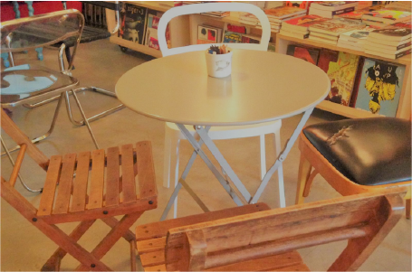
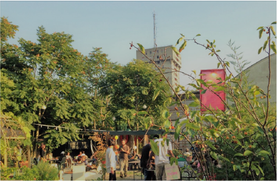

Milan is always busy. Concerts, plays, shows, events of all sorts, but there are some time of the year that you have to clear your agenda to fit this appointments in.

-
 Duomo
Duomo- La Rinascente is a collection of high-end stores with Italian and international brands in fashion, accessories, beauty, homeware, design and food. Including Kartell and Alessi.
- Moronigomma For design objects.
- Via La Spiga, Corso Napoleone and Galleria Vittorio Emanuele II - To windows watching and be inspired by the fashion.
- Corso Vittorio Emanuele II and via Torino - To buy the fashion.
-
- Corso Buenos Aires - To buy closthing.
- Via Tadino - Where you could find the cook or comic strip that you always wanted.
Porta Venezia -
 Brera
Brera- Zona Brera little shops and alternative brands.
-
- Corso di Porta Ticinese and Navigli, to buy from little brands and vintage shops.
- Mercato di Papiniano On Saturdays. To buy for a bargain fashion brands.
- Corso di Porta Ticinese and Navigli, to buy from little brands and vintage shops.
- Fiera di Senigallia On Saturdays. Alternative flea market.
Porta Ticinese -
 Porta Nuova
Porta Nuova -
- Corso Vercelli and surroundings, to shop in a elegant part of the city.
Cadorna